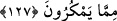

durumlarından biridir. Bu yüzden o kimsenin karşılık vermesi şer’an caizdir. Allah
Teâlâ buyuruyor ki: “Kim zulme uğradıktan sonra hakkını alırsa, artık onlara
yapılacak bir şey yoktur.” (eş-Şûrâ, 42/41) Affetmek daha fazîletlidir. Allah Teâlâ
buyuruyor ki: “Kim affeder, bağışlarsa onun mükafatı Allah’a aittir.” (eş-Şûrâ,
42/40) Eğer bu, haddi gerektiren bir kelime olursa, misliyle mukabelede bulunduğu
takdirde aynı had kendisine de vurulacağından dolayı cevap vermesi uygun değildir.
İmam Timurtâşî, Tenvîru’l-ebsâr’da der ki: “Haksız yere başkasına vuran ve vurulan
kimsenin de ona vurması durumunda her ikisine de tâzir cezası gerekir. Cezaya ilk önce
vurandan başlanır.”
Daha sonra Allah Teâlâ, Hz. Peygamber (s.a.)’e aşağıdaki âyette sabrı açıkça
emrediyor. Çünkü O, Allah’ın emrini en iyi bildiği ve O’na güveni tam olduğu için
işlerin azimetleri ile amel etme konusunda insanların en üstünü idi.
127. Sabret! Senin sabrın da ancak Allah’ın yardımı iledir. Onlardan dolayı
kederlenme; kurmakta oldukları tuzaktan kaygı duyma!
Onlardan gelen eziyet ve acılara, Hak’tan yüz çevirmelerine “sabret!” Rasûlullah
(s.a.)’in sabrı, ümmetin bu konuda ona tâbi olmasını beraberinde getirir. Nitekim bir
kimse, İbn Abbas’a tâziye esnasında der ki: “Sen sabret de, biz de seninle beraber
sabredelim. Zira halkın sabrı ancak önderlerinin sabrıyla mümkündür.”
“Senin sabrın da ancak Allah’ın yardımı iledir.” Allah’ın seni sabra muvaffak
kılması ve sabretmene yardım etmesi ile mümkündür. Çünkü sabır, Allah’ın
sıfatlarındandır. Buna ancak Allah’ın bu sıfatı ile vasıflanan üstün ahlak sahibi kimseler
güç getirebilir.
Câfer-i Sâdık (r.a.) der ki: “Allah Teâlâ peygamberlere sabrı emretmiştir. En fazla
payı da Rasûlullah (s.a.)’e vermiştir. Öyle ki, O’nun sabrını O’na değil bizzat kendine
nisbet etmiş ve şöyle buyurmuştur: “Senin sabrın da ancak Allah’ın yardımı iledir.”
“Onlardan dolayı kederlenme” Kafirlerin sana iman etmelerinden ve tabi
olmalarından ümitsizliğe düşerek onlar yüzünden mahzun olma. Bu âyet, “Kafirler
topluluğuna üzülme.” (el-Mâide, 5/68) âyetine benzer
“kurmakta oldukları tuzaktan” gelecekte sana yapacakları hilelerden “kaygı
duyma!” Onların hilelerinden dolayı bir sıkıntı içinde olma. Bu ifade, yanlış anlamaya
neden olan karışık ifadelerden emin olunduğu durumlarda, maklub/secili sözlerdendir.
Çünkü sıkıntı insanın içinde olan bir vasıftır, insan onun içinde olmaz. Bu ifadede diğer
bir incelik daha vardır. O da şudur: Sıkıntı, büyüdükçe ve kuvvet buldukça her tarafı